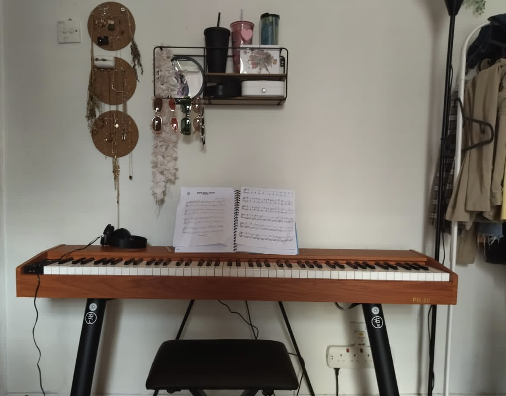

Experience / Piano
I love to play piano since I was a kid. Even though I am not professional I have experience playing the piano at my friend’s birthday party. It was her wish to see me playing the piano for her and as a good friend, I make her wish come true.
It is a good experience for me because I rarely show my skills in music to someone. After all, I am not confident to perform in front of people.
However, nowadays, I couldn’t spare time to practice piano because I’m so busy studying. It took me 3 hours to practice a song than usual. But the enjoyment and thrill I experience make me want to keep practicing until I can perform for my sister's wedding soon.
I want to use my skills in music, crafting, photography, and the arts to be beneficial to me when I’m trying to find a job no matter what the scope is.
